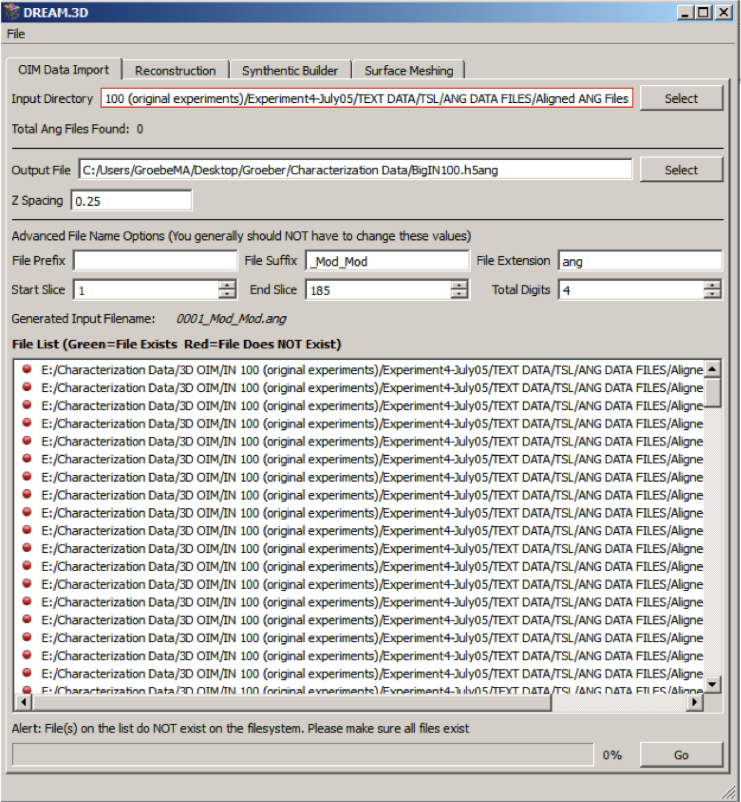

OIM Import Documentation

1. Input Directory - Directory where the .ang files are located
- Total Ang Files Found - Code will determine how many .ang files are present.
- Currently only .ang files are supported.
2. Output File - Name and location of desired output .h5ang file
3. Z spacing - This is the spacing between sections
- Note that the x and y spacings are automatically read from the .ang files.
- If the x and y spacing values change, the ones in the first section are used.
4. File Prefix, Suf fix and File Extension - Variables that are combined to generate the list of file names
- These values should all be automatically determined, but should be checked if there are weird prefixes or suffixes.
5. Start Slice, End Slice and Total Digits - More variables that are combined to generate the list of file names
- Start slice and end slice define the range of data to be included in the .h5ang file (i.e. you don’t have to import the entire dataset).
- Total digits controls the number of leading zeros that are present in the filename.
6. File List - This bank lists all the files that will be included in the .h5ang file based on the inputs chosen.
- The files in the list will have a green light if they are present in the directory selected and a red light if they are not present.